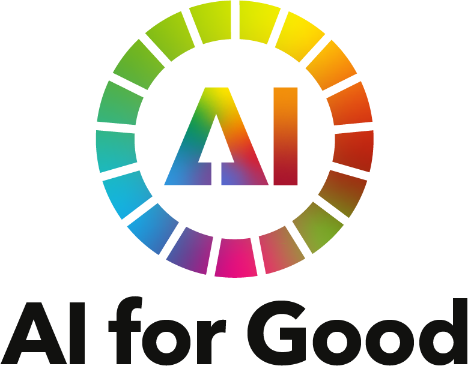

WIP - AI for Good Summit 2025
WIP

Triggered by the post of Abeba..., I ended up watching some of the 'AI for Good Summit 2025' on Youtube. The event itself was conducted on 8-11 July 2025 in Geneva, Switzerland.
WIP
Triggered by the post of Abeba..., I ended up watching some of the 'AI for Good Summit 2025' on Youtube. The event itself was conducted on 8-11 July 2025 in Geneva, Switzerland.

I'm addicted to my phone and I hate it. I knew it's bad. People wrote papers, essays and blog posts about it. Finally, I started feeling it on my own skin.
According to papers by Devi et al. and Muppalla et al., who researched screen-time impact on children and adults correspondingly, excessive screen media usage has predominantly negative effects.
After being made redundant I decided to build a writing habit, which is something that I had in mind for a long time. Just no self discipline, while I'm going to fix! :)

A couple of weeks ago, I had a chance to follow a Data Ethics workshop organized by SURF as part of their 'Responsible Tech' series, led by Piek Knijff (Filosofie in actie). üí• An inspiring, valuable, and actionable day full of insights and reflection. Truly a balm on my tormented soul üßò‚Äç‚ôÄÔ∏èü•π.
As someone who has spent considerable time in data and software space and who carries years of lived experience as an intersectional minority surrounded by disproportional amounts of unbearably complacent mannekes, conversations about power, lack/absence of representation and ethics are deeply personal.
The World Economic Forum named 'Misinformation and disinformation' the #4 global risk in their Global Risks Report 2025, with #1 short-term impact (2 years) and #5 in the long term (10 years).
Luckily, there are plenty of initiatives in the Netherlands helping people become more aware. Yesterday, I attended one of them: Stille Oorlogvoering: de wetenschap van moderne conflicten üîó
I recently navigated the job search process in the Dutch market. After one memorable experience,
I’ve been reflecting on the meaning and value of "competence" in the professional world. I won’t name the organization involved, as my intent is rather to share the experience and ask for opinions. I was invited to an online interview with a potential team. The conversation went well, and I was invited to a second, in-person interview. However, upon arriving at the location, it quickly became apparent that the interviewers were under the impression it was supposed to be virtual. I found myself sitting in the reception area, surrounded by noise, conducting the interview on my phone. Despite the mix-up, I adapted, and the interview proceeded smoothly.